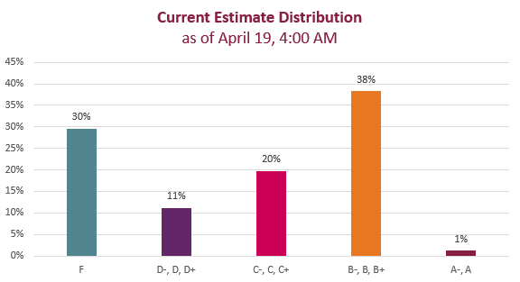

I have calculated your course progress as of 4 AM on April 19, 2023. You can find the estimate in the rubric for the April 19 Current Course Grade Estimate assignment. You should be able to find it on your Grades page in Canvas.
The grade shown on the assignment is the course grade you will have in the class if you do no more work. Note, however, that will change as/if you complete additional work in the course.
The estimate is calculated according to the Effort Expectations for Each Grade Level. You can determine your own grade estimate at any time by following the instructions for Checking Your Progress.
The rubric for the Current Course Grade Estimate is based on the Effort Expectations chart. The rubric percentages come from the bottom of the Canvas Grades page (see an example on the Checking Your Progress page). I marked the percentage on your rubric according to the number listed. For instance, if you had 85.71% for Weekly Activities, I marked the B rating for that category in the rubric. I added the ratings according to the percentage cut-offs. There is no rounding or bumping up.
I do have several strict guidelines, listed below and in the Short Guide under the Additional Grade Calculation Guidelines heading:
Use this documentation from Canvas for help finding the rubric:
Here is a bar graph showing the current distribution of the grade estimates. Basically it shows an upside-down bell curve. Either you’ve done the work in the course or you haven’t. If you have been doing the work, you likely have an estimate in the A or B range. If you haven’t been doing the work, you probably have an estimate in the F range.

Chart Title: Grade Estimate Distribution, as of April 19, 4:00 AM
There are few A- or A grades because most people have not written the Recommendation Report yet. Since you need to earn a Complete on all five Full Drafts, you cannot earn an A without earning a Complete on the report. I expect that the estimates will shift up a bit as more of you finish and submit the outstanding work.